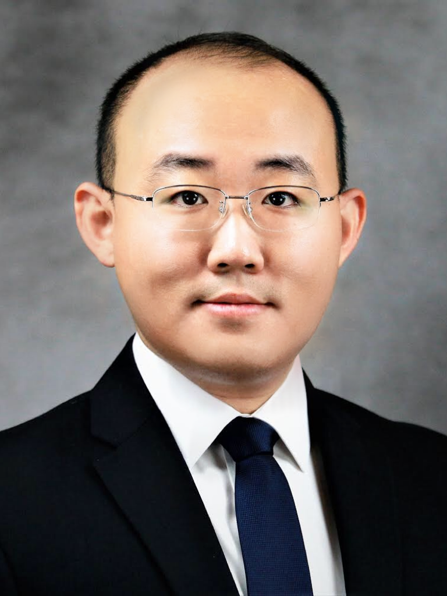
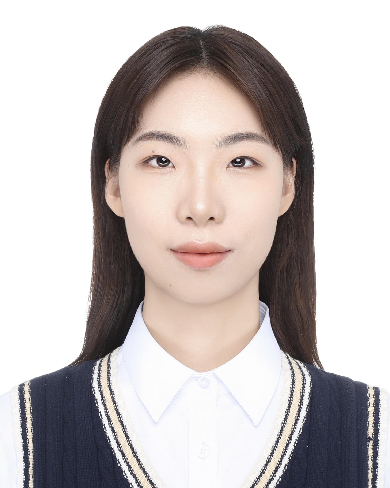

CPS Computational Learning Laboratory
People
GROUP HEAD

- Fangyu Li (李方昱)
- Professor
- College of Artificial Intelligence and Automation
- Faculty of Information Technology
- Beijing University of Technology
PHD STUDENTS
- Jiarong Du (Class 2023)
- Junnan He (Class 2024)
- Mohan Niu (Class 2025)
MASTER STUDENTS
- Jinyi Liu (Class 2023)
-
 Ruicong Ma
(Class 2023)
Ruicong Ma
(Class 2023)
-
 Zhicheng Chen
(Class 2024)
Zhicheng Chen
(Class 2024)
- Qinghe Dong (Class 2024)
-  Man Li (Class 2024)
- Jinghao Liu (Class 2024)
- Ce Duan (Class 2025)
- Guoyang Bian (Class 2025)
- Yixi Wei (Class 2025)
ALUMNI
- Xuqiang Chen (MSc 2025)
- Junzhu Duan (MEng 2025)
- Junnuo Lin (MEng 2025)
- Xi Yang (BEng 2024)